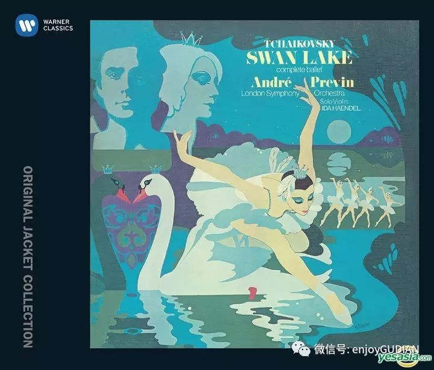

收录于合集
以下文章来源于古典音乐 ，作者莫敏妮
古典音乐 .
中国最有影响力的古典音乐聆赏平台。有温度，更有深度！
灵动足尖上的奇幻故事，交响化的舞蹈音乐，舞动了一池湖水的天鹅，有多少经典能具备这样的力量，隔着世纪穿越时光，惊艳着一代又一代的观众？《天鹅湖》显示的美是极致的。芭蕾舞神奇之处是身体暂时摆脱地心吸引力，也就是说心灵的自由超越对身体的束缚，向着更高更远的空间延伸。
▲ 维也纳国家芭蕾舞团
柴科夫斯基作曲的《天鹅湖》自1877年2月20日首演于莫斯科大剧院，至今已达140年之久，芭蕾舞剧的音乐随之被无数次变更，这期间不断地被重新研究，重新思考、编排、锤炼，也诞生了多个版本，但万变不离其宗，故事概括耳熟能详，对很多人来说也许已经“审美疲劳”。但是，如果你真的看过一场芭蕾舞现场，或许会改变看法。芭蕾舞像云一样柔软，像风一样轻，比月亮更明亮，比夜更宁静，比梦更美，比幻想更动人。我看过马林斯基剧团的演出之后，念叨着一句话：《天鹅湖》是美的巅峰与典范，始终都在展示着芭蕾舞的魅力，不管是白天鹅还是黑天鹅，都在傲人地展示自身的美，以致戏剧矛盾冲突淡化多了。
最近看到很多有关“美”的文章与话题，未必能抓到要点。大道至简，大美至朴，我认为最容易捉摸到美，就是去看一场《天鹅湖》，在听觉与视觉盛宴中得到无以伦比的享受，触摸到美的元素，得到美的教育，并且自然而然地形成对美的评判标准，心中有数，再看其他自不在话下。为何这样说？首先是《天鹅湖》音乐的抒情与优美无法超越，而音乐是芭蕾舞剧最重要的灵魂，柴科夫斯基作曲技巧达到出神入化之境；其次是湖畔那梦幻般的沉静深婉意境之美。天地有大美，身虽未至然心向往之，心住湖畔久矣！流云映霞，月色从容，水汽缥碧，围绕岸边的闪光，湖的叹息，让人顿悟。有时心有隐痛，美在难以到达之地；再有舞蹈情感的审美具有移情性、想象性。当天鹅出现，长着高贵的引颈、洁白的羽毛，在河岸游戈嬉戏。她看来如此甜美高贵，我尽忘劳顿跟随她，我的眼睛凝视而疲累，却未厌足。是否人必定是无知的，就像动物对我们也无知一样，动物世界谜一样兀自迷人地困惑着人类，我们对此充满想象力。
柴科夫斯基如何写这无出其右的作品？莽莽穹苍的万生万物，都有可现的情态，这些不仅是人间大地的杰作，也是音乐家笔下动人的旋律。柴科夫斯基是配器大师，他非常重视木管乐器的表达，双簧管色彩的发挥被提升到一个近乎完美的境界。《天鹅湖》一开始，双簧管就吹出了柔和曲调的序曲，引出故事的线索，这正是天鹅主题的变体，它概略地勾画了全剧图景，并把这种主题纵贯全剧之中。
第一幕，在庆祝王子成年的盛大舞会上，音乐主要由各种华丽明朗和热情奔放的舞曲组成。柴科夫斯基熟悉欧洲的民间音乐，他投入满腔的热情创作这些性格舞曲：匈牙利恰尔达什舞曲显示出舞蹈者的粗犷，呈现出浓郁的民族风情；西班牙波列罗舞曲，用响板的伴奏增强色彩，编舞则用扇子做道具，为西班牙舞蹈与音乐添上艳丽的一笔；意大利那波里舞曲是一首塔兰泰拉舞曲，通篇用小号主奏。据传在意大利南部，被当地一种毒蜘蛛“塔兰泰拉”咬伤的人，必须剧烈跳舞始能解毒，塔兰泰拉舞即起源于此。
第二幕开头，夜空湖畔出现一群天鹅，著名的“天鹅主题”在竖琴和提琴颤音的伴随下，由双簧管和弦乐先后奏出，使舞台弥漫着浪漫的月夜情调。白天鹅（美丽的少女们）挽着从失意中解脱出来的天鹅公主穿越森林。不知有多少人被这段音乐醉美，看《天鹅湖》无不是为了等待这段天籁般的音乐，这是史上最优美的音乐之一，旋律建立在自然小调基础上，充满了温柔的美和伤感。竖琴缓缓的琶音，弦乐轻轻的震音，仿佛看见在不断模拟水流声中，白天鹅缓缓游动引起阵阵涟漪，洁白无瑕的公主优美展翅，弥散着深蕴而悠长的光华。每当这主题音乐响起，总会情不自禁地想打开自己的手臂迎风展翅舒展。
“白天鹅双人舞’是芭蕾舞剧里不变的经典，温婉美丽的白天鹅和懵懂而天真的王子擦出了爱情的火花。在抒情委婉的旋律下用最优美的肢体语言表达出倾城的爱慕。
“四小天鹅舞曲"以轻快利落的节奏，跳跃的音符刻画了小天鹅们在湖畔嬉游的情境，只此一曲，也能让《天鹅湖》在世人的心中恒久流传。“四小天鹅舞曲”贴近我们的生活，四个女孩随时就可以搭肩勾腿拉起手来，绷跳快乐的舞步。生机勃勃的气息配合上顾盼生辉的神采，维妙维肖地表现了轻盈可爱的小天鹅形象。春江水暖，引颈绿波，湖畔四小天鹅，如油画般凝固了时间，留住了唯美的时刻，让人如痴如醉。
《天鹅湖》对演员的要求是非常高的，特别是主角奥杰塔，除了舞蹈技术要高超外，还要以身手不凡的技艺一人饰演两个完全不同气质的角色，一方面能柔情地演绎白天鹅奥杰塔，另一方面要赋予邪恶的黑天鹅奥吉莉亚妖艳的气息。白天鹅举动颦笑无比优美，舞步轻盈迷人，是少女的矜持、娇羞和抒情魅力的化身，她的每一个动作和表情都来自人物命运和心灵深处，蕴藉着诗一般的含义，散发无与伦比的技巧和巨大的艺术感染力。邪魅妖娆的黑天鹅用什么法子挑战白天鹅呢？那肯定要炫技了。她用至少32圈“挥鞭舞”去挑战白天鹅。这个爆发力惊人的技巧动作让舞迷无不拍案叫绝，如此激情四射、无拘无束的黑天鹅同样让人喝彩，同时也替白天鹅捏一把汗。美是需要代价的，不少女芭蕾舞演员为了艺术，付出常人难以忍受的苦。芭蕾舞大师巴伦仙在选拔芭蕾舞演员时有一句名言：“我不要想跳芭蕾舞的人，我要不得不跳芭蕾舞的人。”
▲ 瓦莱里·捷杰耶夫/马林斯基
看芭蕾舞剧，各有不同的观看心得，对于“芭蕾之冠”《吉赛尔》，我对华丽缥缈的舞衣尤为迷恋，其高难度动作与唯美的造型是观看焦点；《罗密欧与朱丽叶》的强大音乐气流侧重描刻戏剧矛盾冲突，两家族青年在街头集体寻仇斗殴，击剑之处火花四溅，看得人胆战心惊，深怕刀剑无情。所有这些都需要极度的表演技能和舞蹈技能，对于角色内心的把握就显得尤为关键。不能忘记马林斯基芭蕾舞剧团，诞生了柴科夫斯基的《天鹅湖》、《胡桃夹子》、《睡美人》三大芭蕾舞剧，在去年马林斯基《天鹅湖》第二幕湖畔场景中，动用了32只“白天鹅”为王子与公主伴舞，她们变换着各种队列，美轮美奂。及至“四小天鹅”出场，简直是美绝了，可以说，经典根本无法超越。
__

芭蕾舞是一门既美又残酷的艺术，决不容许丝毫的怠慢和松懈，它要求舞者付出最艰苦的努力和最大的热情，就像人生。然而芭蕾舞的美让无数人为之心往神驰，为之迷醉。十九世纪印象派重要画家德加，一生不断画着芭蕾舞场景，他把芭蕾舞者转化为一件独特的、深刻的、技艺精确的作品，一种真正的原型：轻盈的美景出现，芭蕾舞裙闪烁并消失，舞裙线条的柔和使芭蕾舞变成一场梦。
▼ 德加画作
“雨打梨花深闭门，忘了青春，误了青春。赏心乐事共谁论，花下销魂，月下消魂。”雨一直下，观看谭元元化身的天鹅公主，赞不绝口！心中感怀。我也有过至深的芭蕾梦，有过“为美一舞，愿做天鹅”的心愿。凝视眼前珍藏的芭蕾舞鞋，回想青春岁月，穿舞鞋的天鹅撩动了多少爱美的心弦！我与蒋勋先生这一句有吻合的心境：“我只是觉得在不断把年轻人带领到“美”的面前，使你们聆听“美”的言语，使你们在“美”的面前惊讶、好奇、流连、低回，使你们在此后可能辛苦艰困，也可能丰富灿烂的一生中有所依伴，知道无论在如何的处境，不能放弃了对美的信仰。”
▲ 《天鹅湖》组曲集锦（尤里·捷米尔卡诺夫/2011威尔比音乐节）
整碟收藏、欣赏
长按或扫描下方二维码，识别、收藏此碟

小编推荐： 更多音乐可以下载索尼精选Hi-Res音乐APP
索尼精选为中国大陆地区率先推出并专注于高解析度音频（Hi-Res Audio）的音乐平台; 与索尼、环球、拿索斯等国际知名音乐公司合作，海外独家引进丰富的古典乐资源，以音质超越CD的Hi- Res高解析度音频呈现。现在注册登录索尼精选，可免费下载指定Hi-Res曲目。点击左下角“阅读原文”，一起尽享高解析度音频带来的“沉浸式”聆听体验！
本月免费体验曲目：莫扎特第三小提琴协奏曲第一乐章 （演奏家：Henning Kraggerud)